photography
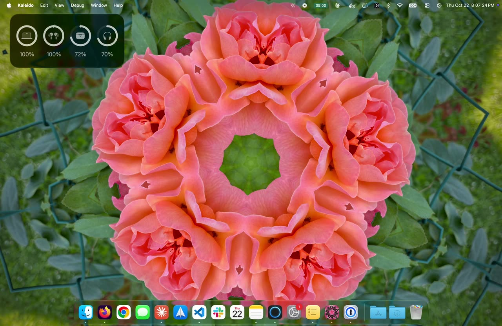
kaleido
Reimagine your photos. Turn them into a digital kaleidoscope wallpaper.
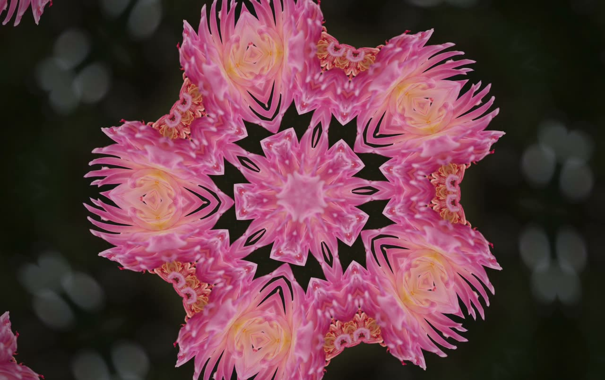
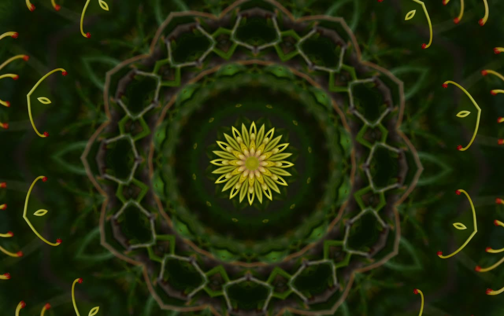
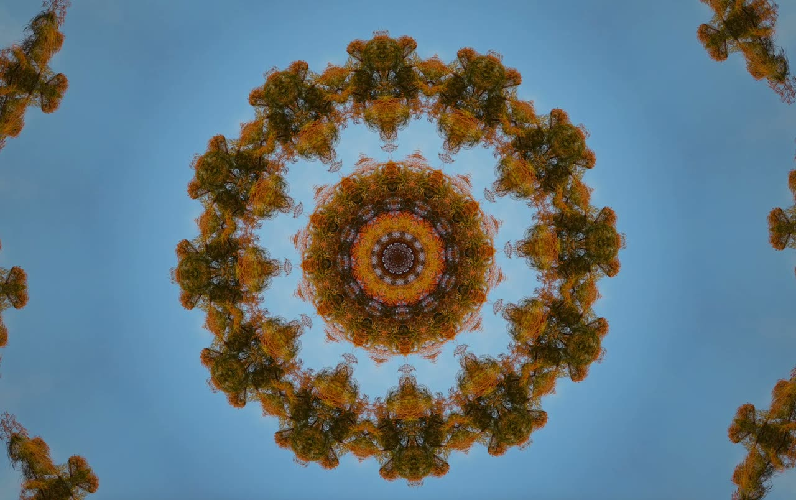
stereogram
A disposable camera taken apart for its lens, a 3D-printed mount that holds three lenses side by side, and the wiggles that came out of it.
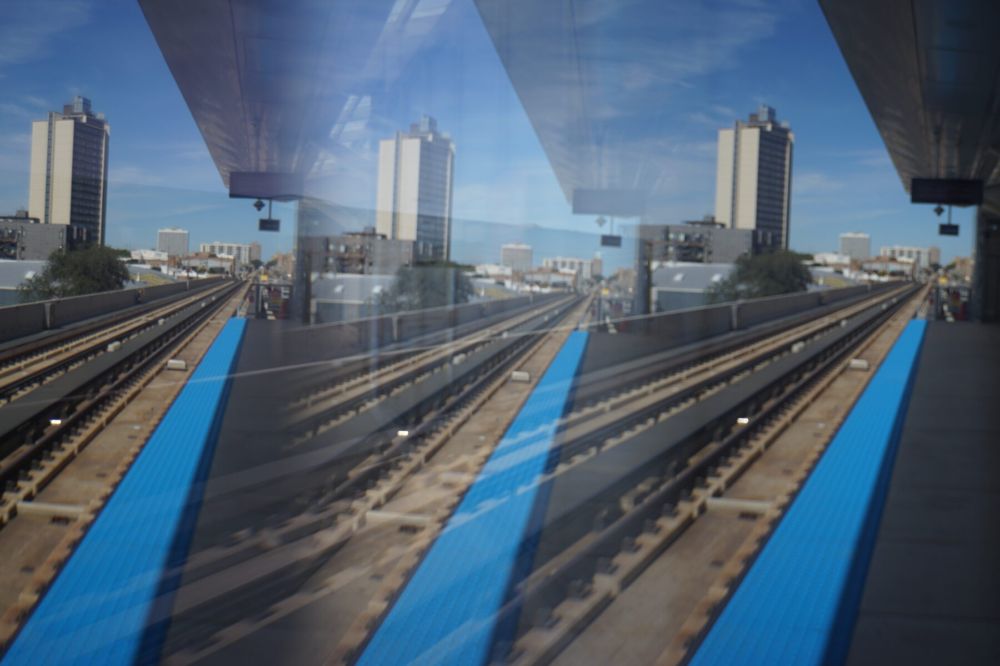
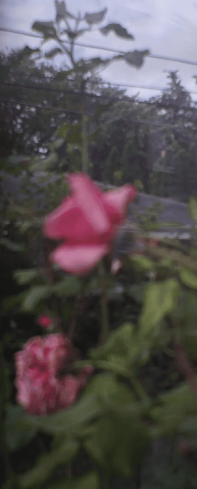
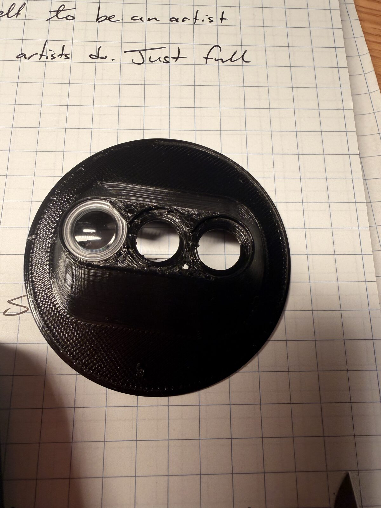
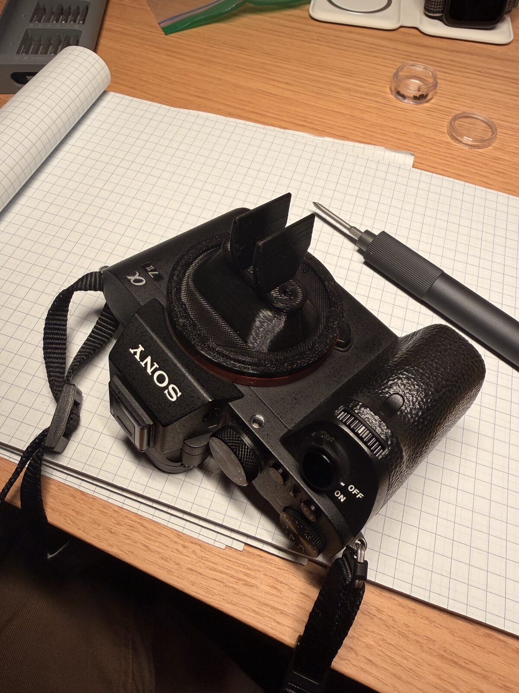
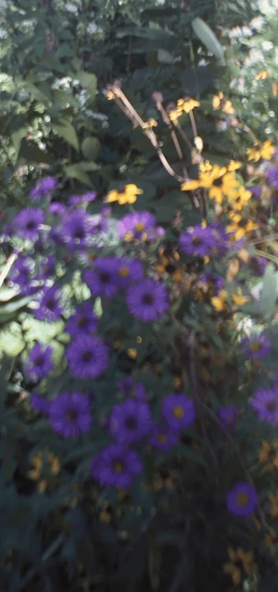
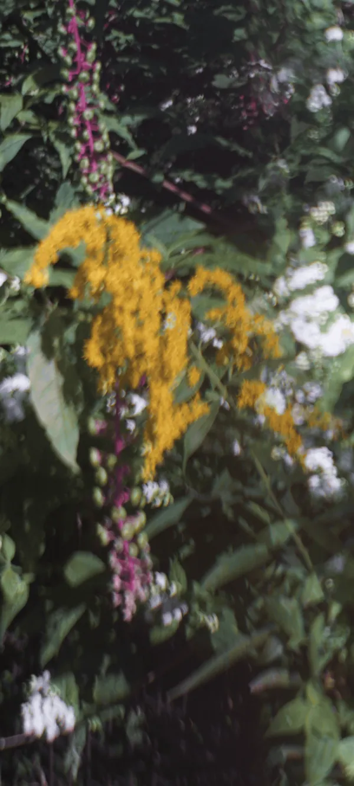
alleys!
Every alley is a little hallway somebody forgot to put a roof on.
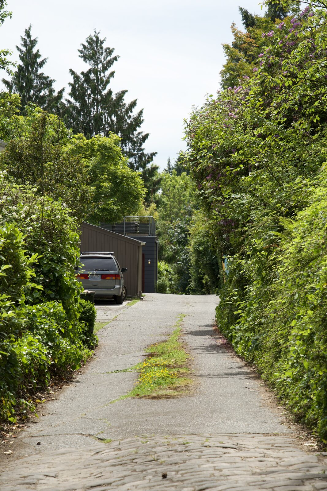
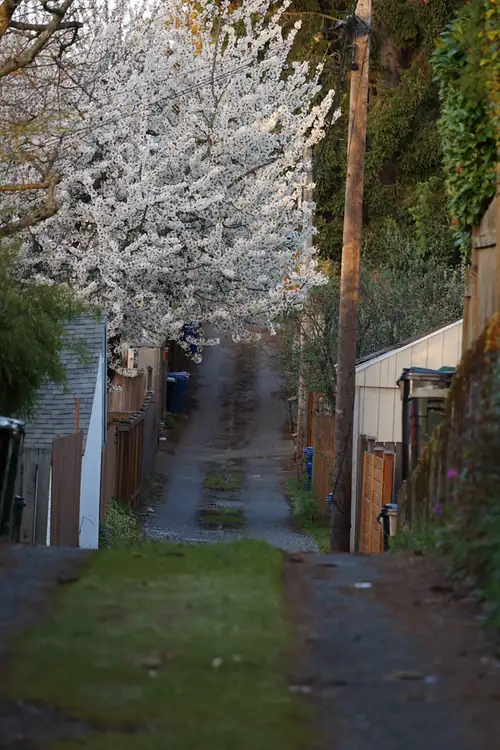
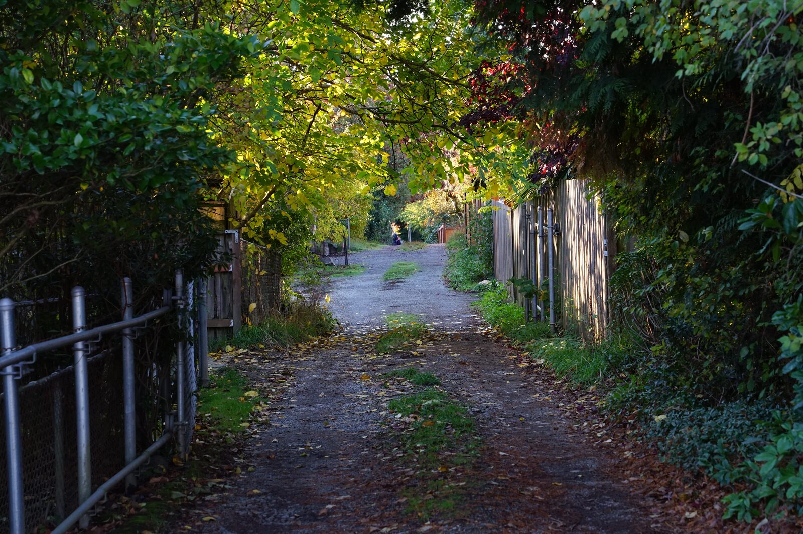
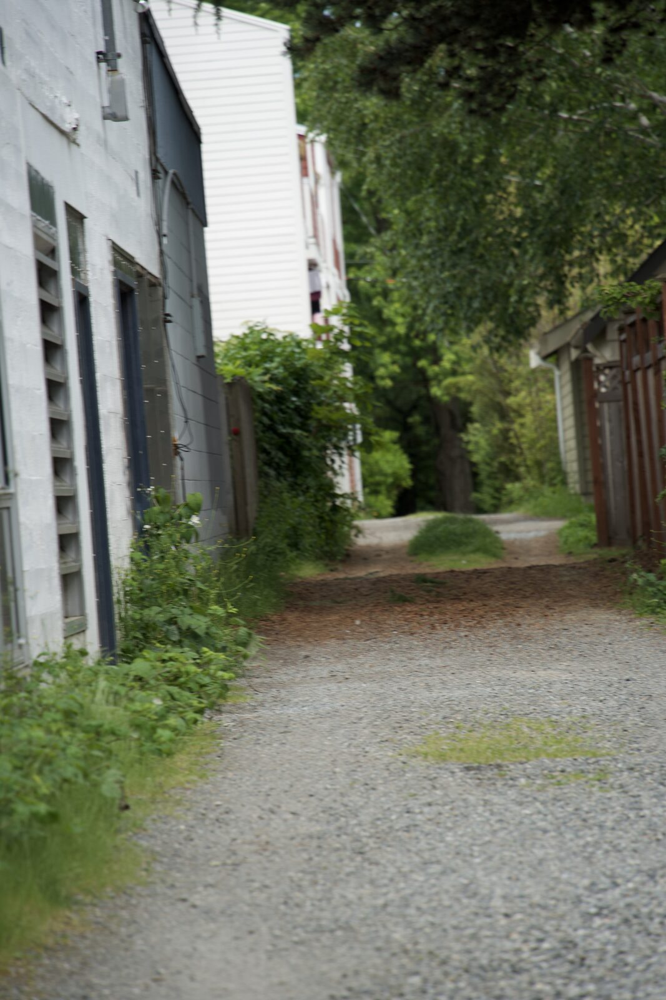